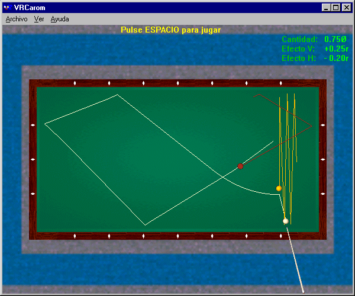
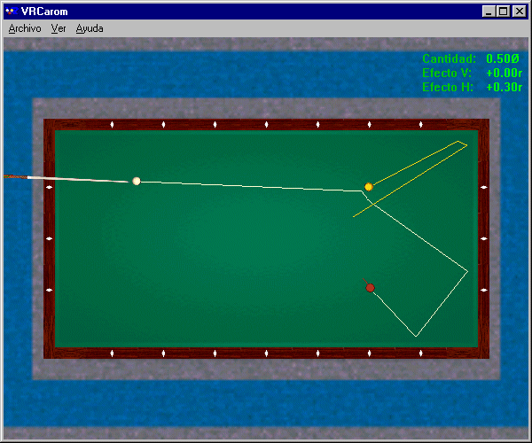
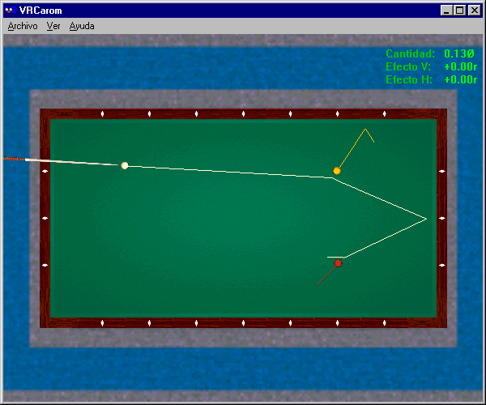
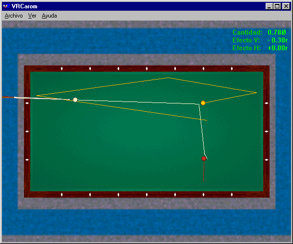
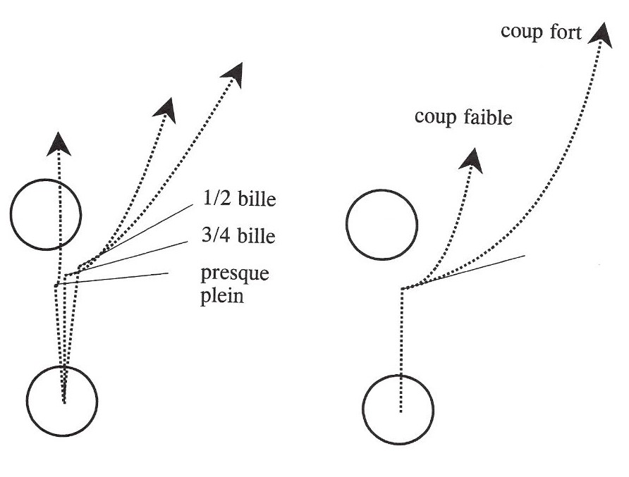
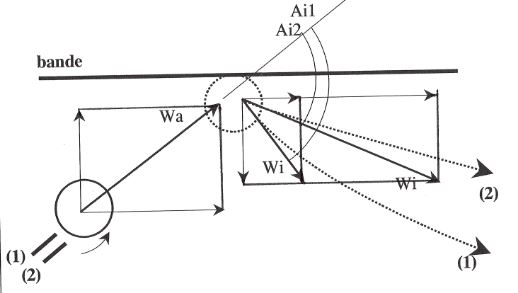
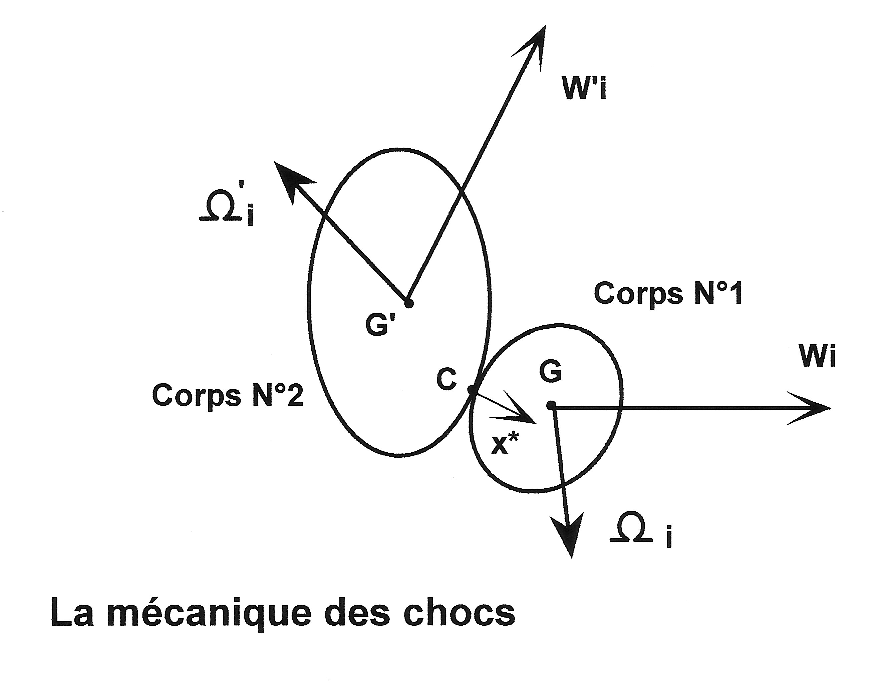
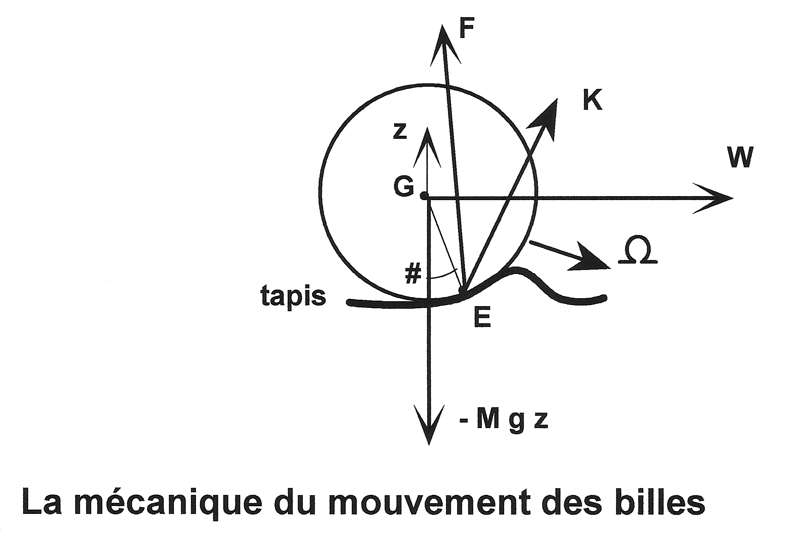

| En Français | Home/Contact | Billiards | Hydraulic ram | HNS | Relativity | Botany | Music | Ornitho | Meteo | Help |
| Theory of the Game | The Art | Bibliography |
The author R. Petit published the French article "La pratique du billard" in Magazine "Pour la Science" No. 246 in April 1998.
This article translated by P. Freedenberg and published on the "vrbilliard" Web site is not any longer available. The full text of Web article is reproduced below. In addition were added :
- Figures 1 to 4 produced by J.A. Gomez Valderrama and derived from his VRCarom simulator ;
- Figures 5 and 6, coming from R. Petit's book : Billard - Théorie du jeu (see References) ;
- Glossary and Results from the mechanics, coming from R. Petit's book : Billard - Théorie du jeu (see References) ;
- Proof of these results, produced by R. Petit on this Website.

Figure 1 above : Running three cushions while skirting the second object ball

Figure 2 above : Two rail stroke

Figure 3 above : Rail-first stroke

Figure 4 above : Direct stroke

Figures 5 above : Adjustment of the fullness of first object ball hit (Figure on the left) ; Adjustment of the force of the cue stroke (Figure on the right)

Figure 6 above : Adjustment of amount of english to the cue ball
Régis Petit. A knowledge of the laws of physics ensures a more reasoned and confident game. Physics both determines and explains the game's playing parameters.
There are several types of billiards. In the mathematician's idealized billiards, the balls are points, friction does not exist, and rebounds follow the laws of optics. In the physicist's less abstract model of billiards, friction influences the trajectory of the balls, but even this model lacks the "intelligence" that is found in an expert player's fingertips. This paper examines how physical laws and mathematics can improve our play of this noble game.
Billiards has existed in its current form for about a century and is steadily gathering more adherents. In particular, French billiards or "carambola" is played with three balls and is divided into five specialities : straight rail, balkline, cushion carom billiards, three cushion billiards, and artistic billiards. Of these, three cushion billiards has developed abroad, mainly in the United States and Japan ; the "rec.sport.billiard" Internet newsgroup is a particularly rich source of material on it.
Billiards is above all a game of practice, based on the knowledge and the control of a certain number of techniques (e.g., draw, follow, "massé", etc.) and of tactics (e.g., position play, gathering, stun, etc.). The theory of billiards is based on the mechanics of solid bodies. The first theoretical treatise on the mechanics of billiards is, to our knowledge, that of G.G. Coriolis, published in 1835. Other treatises followed, both in France and abroad. But works which establish links or synthesis between these two approaches, the one quite practical and the other very theoretical, are rare indeed. Is it really possible to approach billiards play from the viewpoint of mechanics and mathematics ? Is there a "reasoned practice" of billiards ? In my recently published book (see References), which was the inspiration for this article, interested readers will find mathematical justifications for the assertions presented here.
To illustrate how to make use of a knowledge of mechanics, we will consider an example of running three cushions while skirting the second object ball (see Figure 1). The objective is to hit the first object ball with the cue ball, then to go around the second object ball, making the required circuit by contacting three cushions in succession, and finally landing on the second object ball. Four variables suffice for this shot : the height of the cue stroke, the fraction of the first object ball that is hit, the force of the cue stroke, and the amount of english employed.
The first variable which the billiardist must control is the height of the contact point on the cue ball. Three possibilities are available to the player a priori : a more or less low attack ; a more or less high attack ; or a very high attack. The objective is to hit the first object ball, then the long rail located behind it. The mechanics of ball motion teaches us that, after a collision between two balls, each ball's path follows a parabolic curve, followed by a straight segment. To obtain a curve that bends forward so as to strike the long rail rather than the short rail, one must impart heavy follow to the cue ball so that it folds back toward the long rail as soon after the collision as possible. In practice, this result is obtained by a very high point of attack on the cue ball.
The second variable to be controlled is the fraction of the first object ball that is struck by the cue ball. Again, there are three possibilities : ½ ball ; ¾ ball ; or almost full. The objective is for the cue ball to go around the second object ball after striking the first object ball. The mechanics of collisions between two solids teaches us that, just after a perfectly elastic collision between a moving ball and a stationary ball of the same mass, the moving ball always rebounds along a line tangent to the point of collision. To avoid hitting the second object ball, it is thus necessary to raise this tangent as much as possible, while maintaining sufficient speed to contact three cushions. In practice, a half-ball hit does not raise the tangent line sufficiently. While an almost full hit makes it possible to avoid hitting the second object ball, this type of collision slows the cue ball too much. Aiming for about a ¾ ball hit is a good compromise (see Figure 5 on the left).
The third variable to be controlled is the force of the cue stroke, which determines the speed of the cue stick when it hits the cue ball. Three possibilities are again available to the player : a soft, medium, or forceful stroke. The objective is to minimize the risk of a collision while the cue ball goes around the second object ball. We saw previously that the cue ball departs its collision with the first object ball along the tangent line. To avoid the second object ball, the cue ball must follow this tangent line as far as possible. This result is obtained by a forceful cue stroke (see Figure 5 on the right).
The fourth variable is the amount of english imparted to the cue ball. Three possibilities are again available to the player a priori : running english, centerball (i.e., no english), or reverse english. The objective is to control the rebound of the cue ball off the first rail, in order to hit three cushions before landing on the second object ball. Mechanics teaches us that, following a collision with a rail, the rebound of the cue ball depends on the amount of english it possesses (see Figure 6) :
Just before colliding with a cushion, the ball's linear velocity (Wa) may be decomposed into a velocity tangential to the rail and a velocity perpendicular to the rail. What occurs immediately after the collision ?
Without english (case (1)), the ball's perpendicular velocity (Wi) after striking the rail is decreased by the rail's imperfect elasticity, while its tangential velocity is considerably reduced by the rubbing of the ball against the rail. These two components determine the angle (Ai1) at which the cue ball departs from the rail.
With running or natural english (case (2)), the ball rubs very little when it contacts the rail. The only change compared with the preceding case relates to the tangential speed returned by the rail, which is higher. The cue ball thus departs at a smaller angle (Ai2) from the rail.
In practice, to run three cushions before landing on the second object ball, experience shows that one must impart a little running english to the cue ball.
Let us now compile the various parameters that we must apply : a very high attack on the cue ball to bend its path towards the long rail behind the first object ball ; a ¾ ball hit on the first object ball to go around the second object ball without losing too much speed in the collision ; a forceful cue stroke to minimize the risk of a premature collision ; and running english to contact three rails before landing on the second object ball. I consider this a "reasoned practice" to achieve a complex stroke.
On other strokes, there may generally be up to three additional variables to control. The fifth variable is the inclination of the cue stick with respect to the cloth, which facilitates "massé", "piqué", and jump shots. The sixth variable is the mass of the cue stick, which enables the cue tip to contact the cue ball closer to or further from its edge. The final variable is the most important : choosing the best tactic to make a successful billiard when several approaches are possible.
Let us consider an example (see Figure 2) from the game of straight rail, in which the objective is to make a successful billiard by contacting the two object balls with the cue ball ; rail contacts are optional. Three possibilities are available to the player a priori : direct stroke, rail-first stroke, or two rail stroke. Mechanics teaches us that, when the cue ball is rolling without slipping on the cloth, hitting half of the first object ball ensures that the cue ball will run at a final angle of 40 degrees ; moreover, this final angle is relatively insensitive to variations on either side of a half-ball hit. Fortunately, then, we may select this fraction of the first object ball to be hit and play two rails to achieve a low risk billiard.
For comparison, how reliable are the two alternative tactics ? Hitting a rail (see Figure 3) requires that a thin fraction of the first object ball be hit, and thus implies extreme precision in aiming, which is risky in practice. A head-on hit (see Figure 4) requires backspin on the cue ball commensurate with a precise ball fraction and, taking into account the distance between the balls, a sufficiently powerful cue stroke to preserve this backspin until the balls collide, which is even riskier. In practice, a player should try to select robust two rail tactics : a high point of attack to make the cue ball roll without slipping against the cloth, a fractional hit close to ½ ball to obtain a 40° final angle, a soft cue stroke so as not to disperse the three balls, and the right amount of english to control the rebound from the first rail and land on the second object ball for the count after contacting two rails. This is another example of "reasoned practice" for the given play situation.
Theory and practice are complementary, but theory can never replace practice. Indeed, only practice makes it possible to progress in the area of consistency of performance. Theory, on the other hand, has an instructional value : it enables us to understand and impart to others the variables which a player must address. Both practice and theory thus combine to form a "reasoned practice" of billiards, and will continue to fascinate both players and theoreticians.
Adhérence pendant le choc : contact without slipping, or momentarily grabbing
Amorti : dead ball
Attaque basse/haute : below-center/above center hit
"Bande-avant" ou "Bricole" : rail-first shot or kick shot
Bande lisse/rugueuse : slippery/sticky cushion, or low/high friction cushion
Bande molle/dure : soft/hard cushion
Billard (table) : table
Billard français : carom billiards
"Bille collée" : frozen ball
Bille N°1, N°2 et N°3 : cue ball, first object ball and second object ball
"Bosse" ou "Contre" : double kiss (shot where the first object ball rebounds back into the cue ball)
"Butage" : cling or skid
Chevalet : bridge
Choc bille-tapis : ball-cloth collision
"Coulé" : follow shot
Coup de queue incliné, faible/moyen/fort : soft/medium/hard cue-elevated stroke
"Coup-dur" : kiss-back shot or double kiss, but only when the first object ball is close to or frozen to the cushion
Déviation initiale/finale : initial/final deflection angle
Effet de côté contraire, par rapport à la bande/bille N°2 : reverse or inside English
Effet de côté naturel ou "Bon effet", par rapport à la bande/bille N°2 : running or outside English
"Fausse-queue" : miscue
Force de frottement : friction force
"Glissement pur" : pure sliding
Hauteur d'attaque : height of the cue tip contact point
Limage : warm-up stroke
"Massé" : massé shot
Moment cinétique : angular momentum
Moment d'inertie : moment of inertia
Paramètre de pivotement : coefficient of boring friction or z-spin coefficient of friction
Patinage avant/arrière : forward/backward overspin or top-/back-overspin
Percussion : percussion
"Piqué" : piqué shot (massé shot aiming to move back the cue ball)
"Placement" : position play
Point d'appui de la bille : ball-cloth contact point
Point de choc : collision point
Point de visée : aiming point
Principe fondamental de la dynamique : Newton's laws of motion
Procédé : cue tip
"Quantité de bille" (plein, 3/4 plein, fin) : fullness of ball hit (full, 3/4-full, fine)
Quantité de mouvement : linear momentum
Queue légère/massive : light/heavy cue stick
"Queutage" : push shot (foul shot where the cue ball is close to or touching the object ball)
"Rappel" : gather shot
"Rencontre" : time shot (shot where the first object ball pushes the second object ball towards the cue ball)
"Renversé" : reverse-the-corner shot or double-the-rail shot
"Repère" : diamond
Résistance à l'avancement : rolling resistance
"Rétro" : draw shot
Roulement : rolling without slipping
Saut : jump shot
Spécialités (partie libre, jeu de cadre, jeu par 1 bande, par 3 bandes, billard artistique) : disciplines (straight rail, balkaline, one-cushion, three-cushion, artistic billiards)
Tapis : cloth
Vitesse de glissement : relative surface velocity
Vitesse de translation/rotation : translational/rotational velocity
The general equations which model a collision between two arbitrary bodies, taking into account elasticity and the friction between the bodies during the collision, are discussed below.

C, WC : point of collision between bodies, and surface velocity of C relative to body 1
G, M : center of gravity and mass of body 1
I, R : moment of inertia about the central axis of body 1, and radius of body 1 (for a spherical and homogeneous body I = (2/5) M R2 )
P : percussion vector exerted at C by body 2
Q : kinetic energy of the two body system
x* : unit vector, normal to the tangent plane through C and directed toward the interior of body 1
W, Ω : translational velocity vector and angular velocity vector of body 1
' : index signifying body 2
a, i : indices signifying the instants immediately preceding and immediately after collision
fi, N : coefficients of friction and elasticity between the two bodies
e : percentage of kinetic energy lost during the collision
v1.v2 and v1 x v2 : scalar product and vector product of the two vectors v1 and v2, particularly : v1 x v1 = 0
mixed product : (v1 x v2).v3 = (v2 x v3).v1
double vector product : v1 x (v2 x v3) = (v1.v3) v2 - (v1.v2) v3
||v1|| : norm of vector v1, such that ||v1||2 = v1.v1
The standard laws of the mechanics of collisions may be written :
Conservation of linear momentum :
M Wi = M Wa + P
M' W'i = M' W'a + (-P)
where vectors Wi and W'i are to be determined.
Conservation of angular momentum
I Ωi = I Ωa + GC x P
I' Ω'i = I' Ω'a + G'C x (-P)
where vectors Ωi and Ω'i are to be determined.
Coulomb's law of friction :
P = P* (x* - fi WCa / ||WCa||)
P* = k M (W'a - Wa).x*
WCa = (Wa - W'a) - [(Wa - W'a).x*] x* + x* x (R Ωa + R' Ω'a)
where the constant k is to be determined.
Newton's law of collisions for homogeneous and spherical spheres :
(Wi - W'i).x* = - N (Wa - W'a).x*
with N constant.
Theorem of kinetic energy
Qa - Qi = e Qa
where e is not constant (if N is constant).
Q = (1/2) (M W2 + I Ω2 + M' W'2 + I' Ω'2)
There are thus 5 equations for 5 unknowns (Wi, Ωi, W'i, Ω'i, k). Vectorial resolution yields the unique solution
(equations 1a) :
|
Wi = Wa + (P*/M) (x* - fi WCa / ||WCa||) Ωi = Ωa + (5/ 2R) fi (P*/M) x* x WCa / ||WCa|| W'i = W'a + (M/M') (Wa - Wi) Ω'i = Ω'a - (M/M') (R/R') (Ωa - Ωi) k = (1 + N)/(1 + M/M') |
We may also deduce that :
|
Wi.x* = k W'a.x* + (1 - k) Wa.x* W'i.x* = (k M/M') Wa.x* + (1 - k M/M') W'a.x* WCi = u WCa where u = 1 - (7/2) fi (1 + M/M') (P*/M) / ||WCa|| e (1 + M/M') = (1 - N2) (1/2) M [ (W'a - Wa).x* ) ]2 / Qa, when fi is negligible. |
1- For a ball-cloth collision in which the ball rebounds from the cloth after jumping in the air, these equations are exact.
2- For the case of a ball-ball collision, the equations projected horizontally on the cloth are exact, provided we may ignore the influence of the horizontal percussion arising from the cloth. In the vertical dimension, the slow translational velocity of each ball is destroyed by the resistance of the cloth (when the ball is forced into the cloth) or is made insensitive by the weight of the ball which immediately brings it back against the cloth when the ball jumps in the air. The equations are almost exact if we ignore the vertical speed of translation of each ball (components Wi.z and W'i.z).
If we consider a perfectly elastic collision between two balls of the same mass ( N = 1, M = M'), then a collision assumed to take place without friction (fi = 0) results only in an exchange of velocity normal to the point of collision between balls ; under the same conditions, a collision with a stationary ball (W'a = 0) makes the moving ball rebound along a line tangent to the point of collision, even in the presence of friction.
3- The case of a ball-rail collision is similar to that of the collision between balls, setting W'a = Ω'a = (M/M') = 0.
4- In the general case where the cloth is sufficiently compressible so that the various simple collisions which occur (ball-ball, ball-rail and ball-cloth) may be considered sequential, the equations are exact.
5- In the four preceding cases, if the relative
motion between the two bodies is not sufficient to overcome
friction (u < 0), there is adherence during the collision and the
equations must be modified by replacing the quantity fi (P*/M)/||WCa||
by the quantity (2/7)/(1 + M/M'), which gives (equations 1b) :
|
Wi = Wa + (P*/M) x* - (2/7) WCa/(1 + M/M') Ωi = Ωa + (5/7R) [x* x WCa/(1 + M/M')] W'i = W'a + (M/M') (Wa - Wi) Ω'i = Ω'a - (M/M') (R/R') (Ωa - Ωi) k = (1 + N)/(1 + M/M') |
These equations also include the ideal case
of body 1 rolling without slipping on body 2 immediately before the
collision (WCa = 0).
6- Suppose that, just before the collision
between the two bodies, body 2 is stationary (W'a = Ω'a = 0), and body
1's kinetic energy of rotation is small (Ωa is negligible). If the
collision is nearly head-on (Wa // x*) and friction is small (fi
negligible), then the coefficients e and N are related, to a first
approximation, by :
|
e = (1 - N2)/(1 + M/M') |
7- The case of a horizontal cue stick-cue ball
collision is special : the cue stick simultaneously strikes the ball and
the hand posed on the cloth. To model this collision, the percussion vector
(P) is almost parallel with the axis of the cue stick
(P // W'a and Ω'i = 0), with the proportion of kinetic energy
dissipated in the collision remaining almost constant. If D indicates
the offset of the cue with respect to the center of the ball, vectorial
resolution yields the unique solution (equations 1c) :
|
Wi = W'a [1 + (1 - e - e K2 M'/M)1/2] / [K2 + M/M'] Ωi = (5/ 2R) (GC/R) x Wi W'i = W'a - (M/M') Wi K2 = 1 + (5/2) (D/R)2 |
8- The case of a ball-cue collision in which the cue stroke is inclined with respect to the plane of the cloth is similar to the case of the horizontal cue stick-cue ball collision. If for simplicity we suppose that the cloth is sufficiently compressible to be able to time sequence the two simple collisions which occur (the ball-cue stick collision and the ball-cloth collision), we may replace the terms Wa and Ωa in equations 1a, respectively, by the terms Wi and Ωi given by equations 1c.
The generalized equations which govern a ball's motion immediately after the collision which caused the motion are given below.

E, WE : position of the ball on the cloth, and relative surface velocity vector at E
F, K : reaction force, and the frictional torque of the cloth on the ball
z : vertical unit vector, directed upward
c : index relating to the instant when the ball rolls without slipping on the cloth
dv/dt : time derivative of vector v
f, fc, fz : coefficient of friction, coefficient of rolling resistance, and z-spin friction parameter between the ball and cloth
g, t : acceleration of gravity, and time
The standard laws of the mechanics of a ball in motion may be written :
Newton's law of motion :
M dW/dt = F - M g z
I dΩ/dt = GE x F + K
with vectors W, Ω and F to be determined.
Particular scenarios :
1. Jumped ball
F = 0 and K = 0
2. Ball sliding on the cloth (Coulomb's Law of friction)
E immediately below G (ignoring rolling resistance compared to friction)
F = M g (z - f WE / ||WE||)
with WE = W + z x (R Ω)
K horizontal is negligible compared to GE x F
K vertical = - (fz / R) (M g R) (Ω vertical) / ||Ω vertical||
3. Ball rolling without slipping on the cloth
W = - z x (R Ω)
K horizontal = 0
K vertical = - (fz / R) (M g R) (Ω vertical) / ||Ω vertical||
There are thus 3 equations for 3 unknowns (W, Ω and F). Vectorial resolution yields a unique solution (equations 2a) :
1. Jumped ball
|
W = Wi - g t z and Ω = Ωi |
2. Ball sliding on the cloth (for t < tc)
|
W = Wi - (t/tc) (Wi - Wc) Ω horizontal = Ωi horizontal + (5/ 2R) (t/tc) z x (Wi - Wc) Ω vertical = Ωi vertical [1 - (5/ 2R) (fz / R) (g / ||Ωi vertical||) t] tc = ||Wi - Wc||/(f g) Wc = (5/7) [Wi - (2 R/5) z x Ωi ] Ωc horizontal = (1/R) z x Wc = (5/7) [(1/R) z x Wi + (2/5) Ωi horizontal] F = M g (z - f WEi / ||WEi||), which indicates that the force F remains constant during the entire sliding motion |
3. Ball rolling without slipping on the cloth (for t > tc)
|
W = Wc [1 - fc (g / ||Wc||) (t - tc)] Ω horizontal = (1/R) z x W Ω vertical = Ωi vertical [ 1 - (5/ 2R) (fz / R) (g / ||Ωi vertical||) t ] F = M g (z - fc Wc / ||Wc||), which indicates that the force F remains constant during the entire rolling motion |
In each case, one may integrate the equations for W and Ω to obtain the trajectory and the rotation of the ball.
If the ball jumps in the air immediately after the collision, its trajectory is a parabola in a vertical plane.
If the ball remains in contact with the cloth, it starts its motion by slipping in a horizontal plane in a parabolic arc, then rolls without slipping in a straight line.
The complete synthesis of the theory of billiards, including the justification for the assertions made in this article, may be found in the French book "Billiards - Theory of Play" by Regis Petit (see References).
Regis Petit is computing engineer of the company "Electricité de France" (EDF).
Basic equations :
Index ' is relative to the collided body (ball 2, cushion or cloth).
(C1) M Wi = M Wa + P
(C2) M' W'i = M' W'a + (-P)
(C3) I Ωi = I Ωa + GC x P
(C4) I' Ω'i = I' Ω'a + G'C x (-P)
with : I = (2/5) M R2 and I' = (2/5) M' R'2
(C5) (Wi - W'i).x* = - N (Wa - W'a).x*
(C6) P = P* ( x* - fi WCa / ||WCa||)
(C6') WCa = (Wa - W'a) - [ (Wa - W'a).x* ] x* + x* x (R Ωa + R' Ω'a)
(C6") P* = k M (W'a - Wa).x*
Solution :
Equations (C1) and (C2) give W'i as follows :
(C7) W'i = W'a + (M/M') (Wa - Wi)
Equations (C3) and (C4) give Ω'i as follows :
(C8) Ω'i = Ω'a - (M/M') (R/R') (Ωa - Ωi)
Equations (C1), (C6) and (C6") give Wi as follows :
(C10) Wi = Wa + (P*/M) (x* - fi WCa / ||WCa||)
Equations (C3), (C6) and (C6") give Ωi as follows :
(C11) Ωi = Ωa + (5/2)(1/R) x* x (Wa - Wi) = Ωa + (5/2)(1/R) fi (P*/M) x* x WCa / ||WCa||
Replacing of (C7) in (C5) gives Wi as follows :
(Wi - Wa).x* = ((1 + N)/(1 + M/M')) (W'a - Wa).x*
Replacing of (C10) in this last equation gives the coefficient k as follows :
(C9) k = (1 + N)/(1 + M/M')
It also shows that :
(C12) WCi = (Wi - W'i) - [ (Wi - W'i).x* ] x* + x* x (R Ωi + R' Ω'i) = u WCa
The adherence case during the collision is special. It occurs when the relative motion between the two bodies is not sufficient to overcome friction, which is written :
(C13) WCi = 0
Replacing of (C13) in (C12) gives the adherence condition as follows :
u < 0 which includes the case WCa = 0
Equations (C7)(C8)(C10)(C11) must be modified by replacing the quantity fi (P*/M)/||WCa|| by the quantity (2/7)/(1 + M/M')
Basic equations :
Index ' is relative to the cue.
(C21) M Wi = M Wa + P
(C22) M' W'i = M' W'a + (-P)
(C23) I Ωi = I Ωa + GC x P
with : I = (2/5) M R2
(C24) Qa - Qi = e Qa
(C24') Q = (1/2) (M W 2 + I Ω2 + M' W'2 + I' Ω'2)
Assumptions :
- The ball is at rest just before collision :
(C25) Wa = Ωa = 0
- The cue movement just before collision is a translation :
(C26) Ω'a = 0
- The cue collides the ball at point C : GC = - R x* and we define the following coefficient : K2 = 1 + (5/2) (D/R)2
- The hand or bridge guiding the cue completely absorbs the transversal shock wave :
(C27) P is parallel to W'a
(C28) Ω'i = 0
- The offset (D) of the cue is not too large so that the cue and the ball automatically split just after collision :
(C29) Wi.x* > W'i.x*
Solution :
Equations (C21) and (C25) give W'i as follows :
W'i = W'a - (M/M') Wi
Equations (C23), (C25) and (C2) give Ωi as follows :
Ωi = (5/2)(1/R) (GC/R) x Wi
Equations (C24')(C25)(C26) and (C28) give Qa and Qi as follows :
Qa = (1/2) M' W'a2
Qi = (1/2) (M Wi2 + I Ωi2 + M' W'i2 )
Equations (C23) and (C25) give Ωi2 as follows :
Ωi2 = ((5/2)(D/R)(1/R))2 Wi2
Equations (C24)(C27) and (C29) give Wi as follows :
Wi = W'a [1 + Square_root of (1 - e - e K2 M'/M)] / [K2 + M/M']
The condition of automatic cue-ball splitting can be written as follows :
(D/R)2 < (2/5)(1 + M/M')(1 - e (1 + M'/M))
Basic equations :
(M1) M dW/dt = F - M g z
(M2) I dΩ/dt = GE x F + K
with : I = (2/5) M R2
(M3) F = M g [ z - (f WE / ||WE||) ]
(M4) WE = W + z x R Ω = W + z x R Ω horizontal
Assumptions :
- The ball remains in contact with the cloth at the beginning and during the sliding period : Wi = Wi - (Wi.z) z and W.z = 0
- The rolling resistance is negligible compared to the friction force : GE = - R z
- The term K horizontal is negligible compared to the product GE x F : K horizontal = 0
Solution :
Equations (M1) and (M3) give dW/dt as follows :
(M1') dW/dt = - f g WE / ||WE||
Equations (M2) and (M3) give dΩ horizontal /dt as follows :
(M2") dΩ horizontal /dt = - (5/2) (1/R) z x (F / M) = - (5/2) (1/R) z x dW/dt
Equations (M4) and (M2") give dWE/dt as follows :
dWE/dt = dW/dt + z x R dΩ/dt = dW/dt + z x R dΩ horizontal /dt = dW/dt - (5/2) z x (z x dW/dt) = (7/2) dW/dt
From Equation (M1') we deduce that dWE/dt is parallel to WE.
WE keeps a constant direction during the movement and WE can be written as follows :
(M3') WE / ||WE|| = WEi / ||WEi||
From Equation (M3) F can be written as follows :
(M3") F = M g [ z - (f WEi / ||WEi||) ]
Then F keeps a constant amplitude and direction during the movement.
Integrating of Equation (M2") gives Ω horizontal as follows :
(M2''') Ω horizontal - Ωi horizontal = - (5/2) (1/R) z x (W - Wi)
From Equation (M4) WE can be written as follows :
(M4') WE - WEi = (W - Wi) + z x R (Ω horizontal - Ωi horizontal) = (W - Wi) - (5/2) z x (z x (W - Wi)) = (7/2) (W - Wi)
At the end of sliding period WE = 0 when W = Wc. Then Wc can be written as follows :
(M8) Wc = Wi - (2/7) WEi = (5/7) (Wi - (2/5) R z x Ωi)
From Equations (M3') and (M8) integrating of (M1') gives W as follows :
W - Wi = - f g t (Wi - Wc) / ||Wi - Wc||
At the end of sliding period t = tc when W = Wc. Then W and tc can be written as follows :
(M10) W = Wi - (t/tc) (Wi - Wc)
(M10') tc = ||Wi - Wc|| / (f g)
From Equations (M4') and (M8) WE can be written as follows :
WE = (7/2) (1 - (t/tc)) (Wi - Wc) = (1 - (t/tc)) WEi
Basic equations :
(M1) M dW/dt = F - M g z
(M2) I dΩ/dt = GE x F + K
with :
I = (2/5) M R2
(M5) Point E is shifted to the front of the ball at an angle (#) : cos[#] = - (1/R) GE.z and we define the following coefficient : fc = sin[#] / (2/5 + cos[#])
(M6) W = - z x R Ω
Assumptions :
- The ball remains in contact with the cloth at the beginning and during the rolling period : W.z = 0
- The term K horizontal is negligible compared to the product GE x F : K horizontal = 0
Solution :
Equations (M2) and (M6) give dW/dt as follows :
dW/dt = - z x R dΩ/dt = - (R/I) z x (GE x F) = - (R/I) ( (F.z) GE - (GE.z) F )
Equation (M1) gives then dW/dt as follows :
dW/dt = - (R/I) ( M g GE - (GE.z) (M g z + M dW/dt) )
Then :
(M11) dW/dt = - g (GE - (GE.z) z) / ((2/5) R - (GE.z)) = - g (R sin[#] W / ||W||) / ((2/5) R + R cos[#]) = - g fc W / ||W||
We deduce that dW/dt is parallel to W.
Then W keeps a constant direction during the movement and W can be written as follows :
(M11') W / ||W|| = Wc / ||Wc||
From Equation (M1) F can be written as follows :
(M11") F = M g [ z - (fc Wc / ||Wc||) ]
F keeps a constant amplitude and direction during the movement. The coefficient fc reflects the rolling resistance on the cloth.
Integrating of Equation (M11) gives W as follows :
(M12) When t > t translation_stop : W = 0
(M12') When t < t translation_stop : W = (1 - (t - tc)/(t translation_stop - tc)) Wc
(M12") t translation_stop = tc + ||Wc||/(fc g)
Equation (M6) gives then Ω horizontal as follows :
(1/R) z x W = - (1/R) z x (z x R Ω) = Ω - (Ω.z) z = Ω horizontal
Basic equations :
(M1) M dW/dt = F - M g z
(M2) I dΩ/dt = GE x F + K
with :
I = (2/5) M R2
(M7) K vertical = - (fz / R) (M g R) Ω vertical / ||Ω vertical||
Solution :
Equations (M3") and (M11") give the following equations :
For the sliding period : (z x GE).(F/(M g)) = ( z x (-R) z ).(F/(M g)) = 0
For the rolling period : (z x GE).(F/(M g)) = ( z x R (sin[#] (W/||W||) - cos[#] z) ).(F/(M g)) = R sin[#] ( z x (W/||W||) ).( z - fc (W/||W||) ) = 0
Equation (M2) can be written :
(M13) I dΩ vertical/dt = ((GE x F).z) z + K vertical = (z x GE).F + K vertical = K vertical = - (fz / R) (M g R) Ω vertical / ||Ω vertical||
We deduce that dΩ vertical/dt is parallel to Ω vertical.
Ω vertical keeps a constant direction during the movement and Ω vertical can be written :
(M13') Ω vertical / ||Ω vertical|| = Ωi vertical / ||Ωi vertical||
Integrating of Equation (M13) gives Ω vertical as follows :
(M14) When t > t spin_stop : Ω vertical = 0
(M14') When t < t spin_stop : Ω vertical = (1 - (t / t spin_stop)) Ωi vertical
(M14") t spin_stop = (2/5) R2 ||Ωi vertical||/(fz g)
The different vectors projected in the cue reference {x, y, z} can be written as follows :
W = (0, V, 0)
Wi = (0, Vi, 0)
Wc = (0, Vc, 0)
Ω = (p, 0, r)
Ωi = (pi, 0, ri)
z = (0, 0, 1)
Equations (M2''') (M8) (M10') and (M10) can be written more simply :
p = pi - (5/2) (1/R) (Vi - V)
Vc = (5/7) (Vi - (2/5) R pi)
V = Vi - (t/tc) (Vi - Vc)
tc = |Vi - Vc| / (f g)
If H is the height of the cue tip contact point, the cue-ball collision gives the following equation for any english :
pi = (5/2) (1/R) Vi (1 - (H/R))
Then :
p = (5/2) (1/R) (V - (H/R) Vi)
Vi - Vc = Vi (1 - (5/7)(H/R))
V = Vi - s f g t
s = Sign of [1 - (5/7)(H/R)]
Integrating of the last equation gives the distance (y) at any time (t) during the sliding period as follows :
y = Vi t - (1/2) s f g t2 = s (Vi2 - V2) / (2 f g)
The sliding is pure for p = 0, then : Vb = (H/R) Vi
The sliding stops for p = - (1/R) Vc, then : Vc = (5/7) (H/R) Vi
Consequently the distances yb (until pure sliding point) and yc (until sliding breakpoint) can be written :
For H < R : yb = Vi2 (1 - (H/R)2) / (2 f g)
For any H : yc = Vi2 |1 - ((5/7)(H/R))2| / (2 f g)